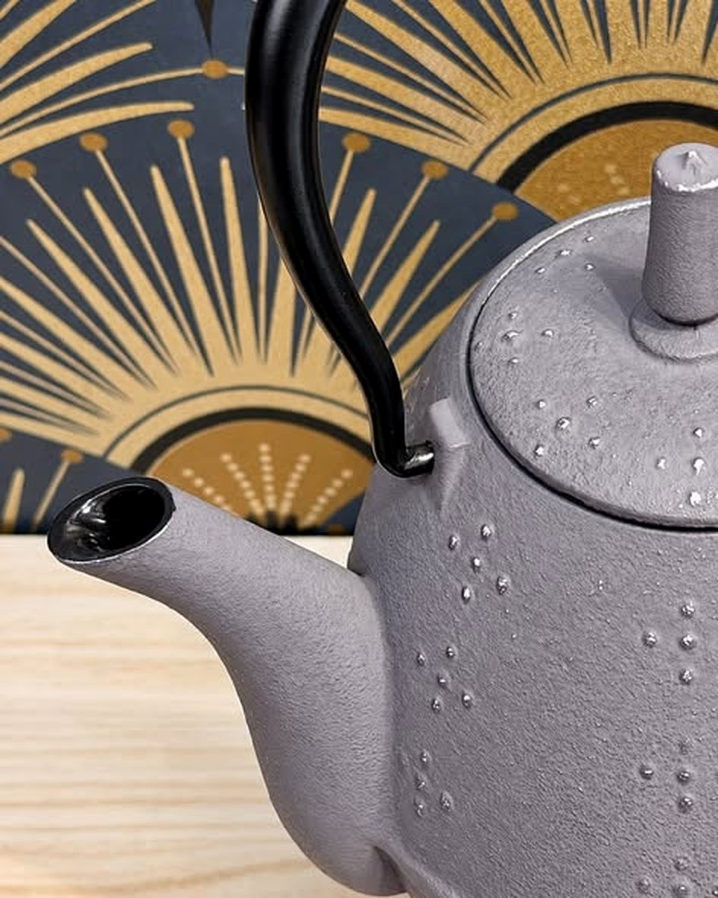
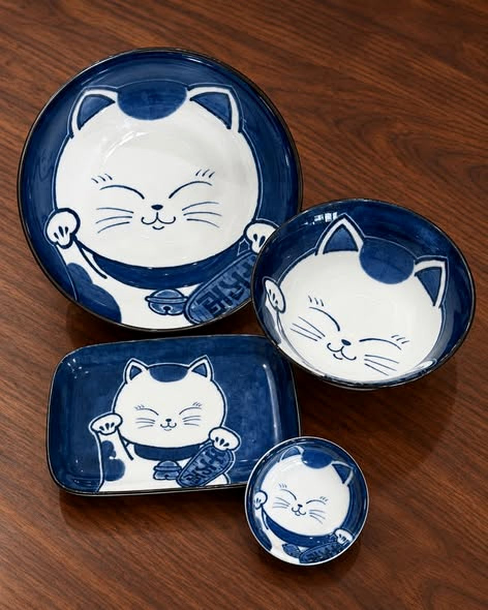
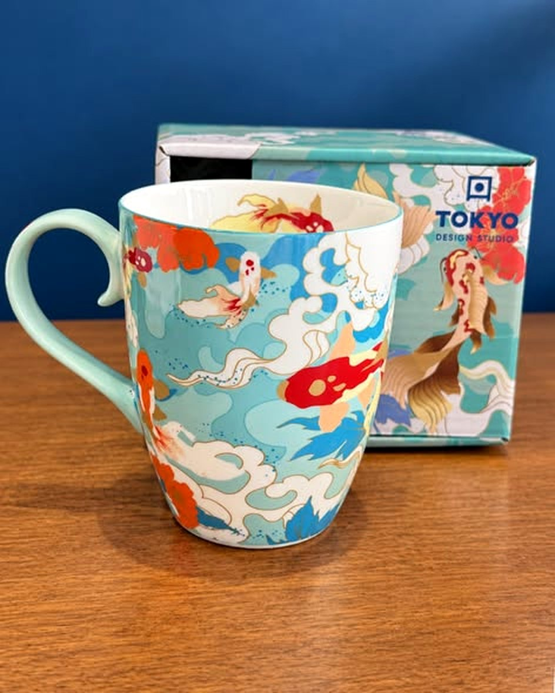
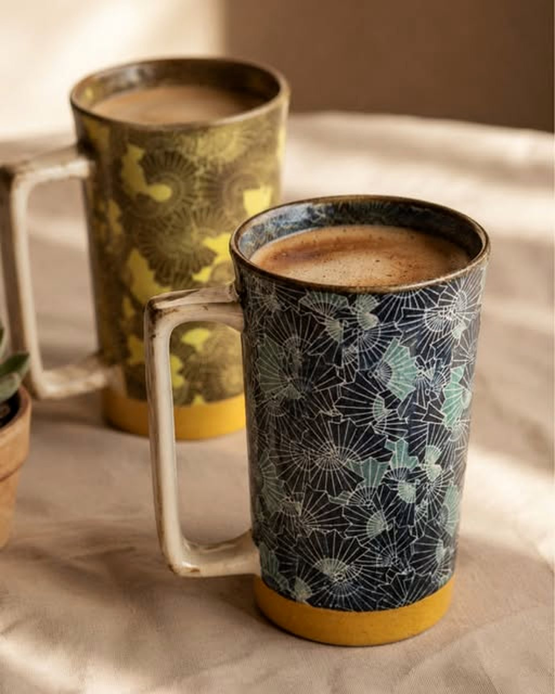
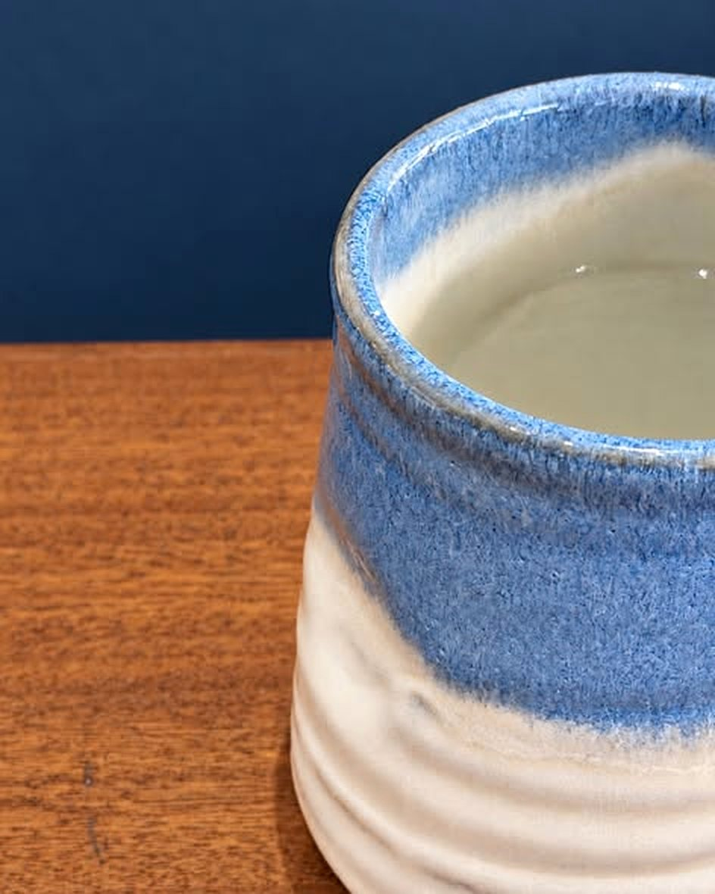
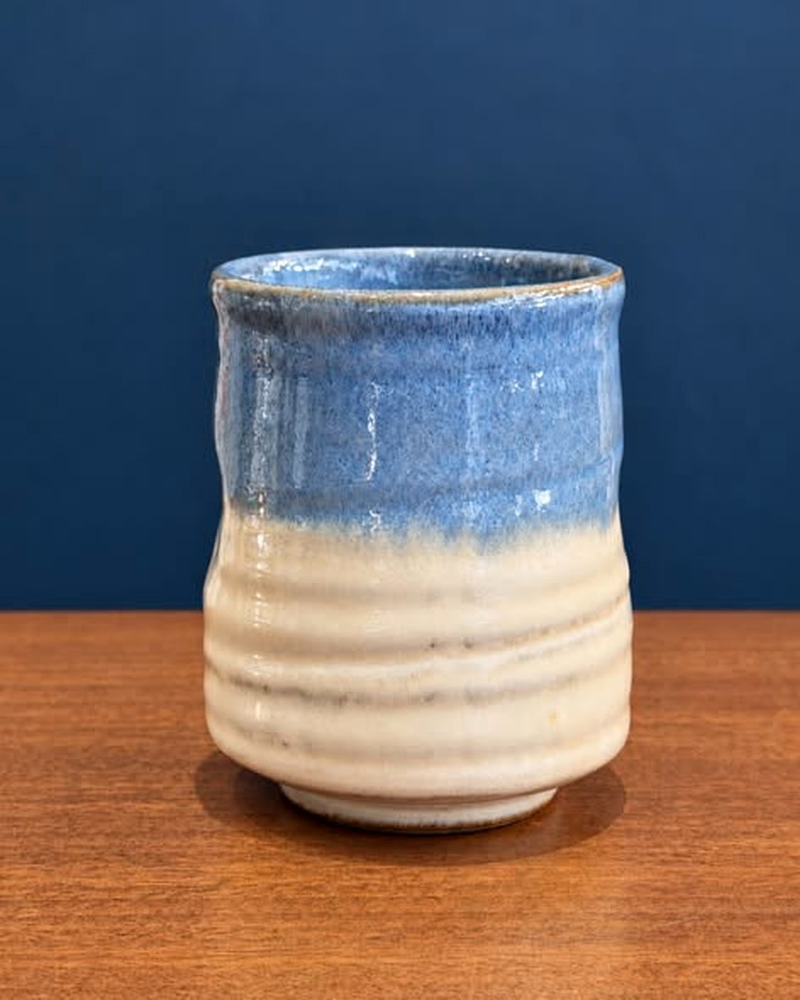
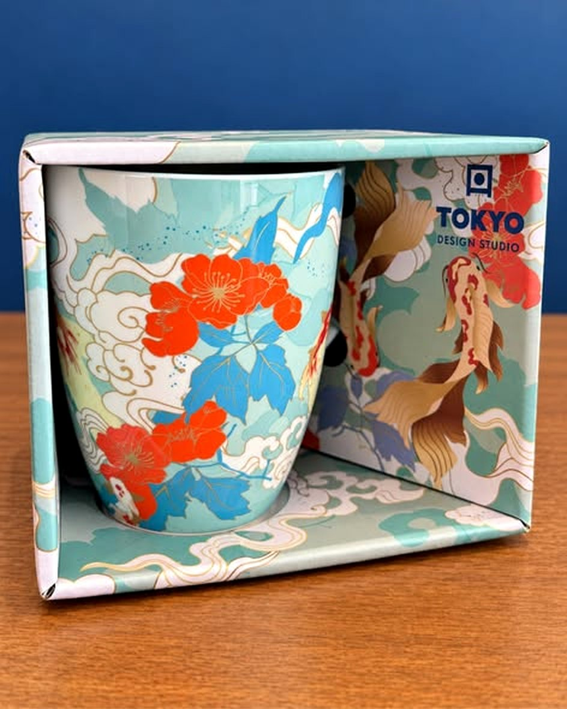
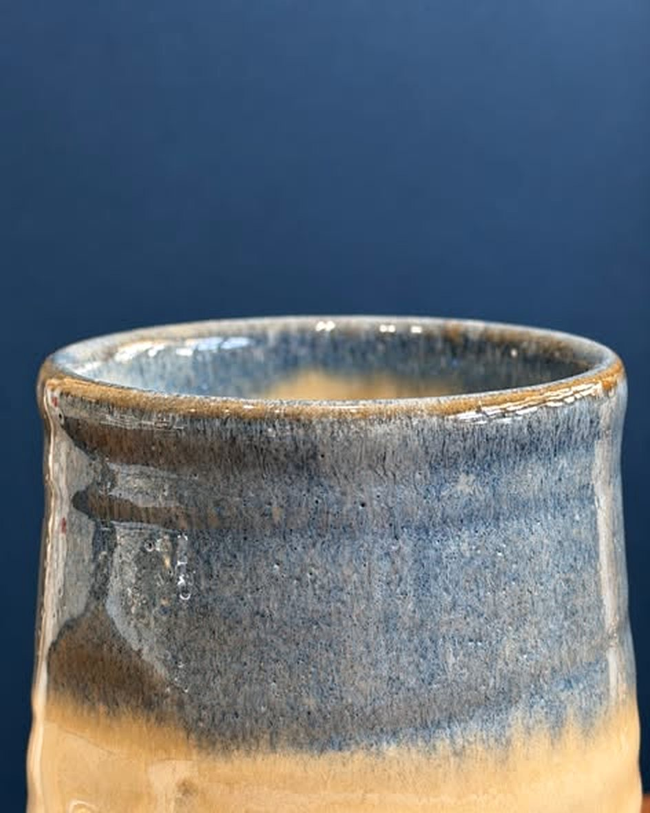

Depuis septembre 2021, YUME Atelier fait voyager au Japon depuis la Galerie Amandine, au cœur de Saint-Gilles-les-Bains.
Arts de la table, tissus, décoration pour la maison : céramiques, théières, couteaux de Sakai, encens d’Awaji, furin, yukata et tissus de Kyoto. Des pièces qui apportent un petit quelque chose du Japon à votre intérieur.







Touchez le cœur d’une pièce pour la mettre de côté, puis demandez sa disponibilité en un message.
Pièce mise de côté.
Demander la disponibilitéDes vestes haori traditionnelles en soie, de seconde main, venues directement de Kyoto.
Une théière en fonte de 0,6 L, signée d’un fabricant japonais de théières en fonte.
Céramiques, furin, encens d’Awaji, couteaux de Sakai, yukata : un petit voyage au cœur de Saint-Gilles.